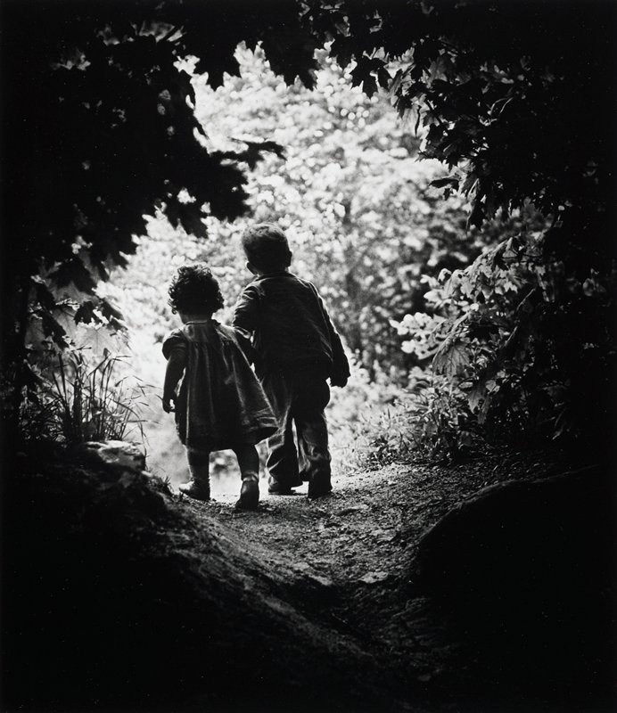

The Walk to Paradise Garden
W. Eugene Smith · 1946 · Gelatin silver print · 30.16 × 26.04 cm (image, sheet) · Minneapolis Institute of Art
In copyright. Look and learn: shown for study, not for download.
In 1945 W. Eugene Smith was seriously injured by mortar fire while photographing the Battle of Okinawa, and he spent two years undergoing surgery. This was the first photograph he took afterwards, in 1946: his two children walking in the garden of his home. He wrote the title in pencil on the mount under the image. Edward Steichen used the picture as one of the key images of The Family of Man in 1955.